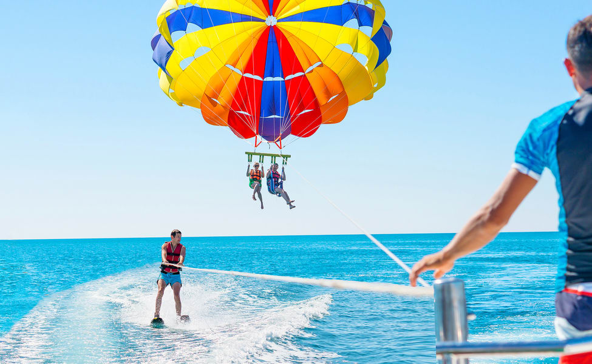

Lying on the western coast, Goa
is India's smallest state and unlike any other, known for its endless beaches, stellar nightlife, eclectic
seafood, world-heritage listed architecture. Spread across just 3,702 km, Goa lies in the Konkan region.
It is a far cry from the hippie haven or a beach getaway, and one of the only few destinations that is open
24x7. The laid-backness (susegad) of Goa attracts as many international tourists as it does Indians, or even
more so.
The Goans are quite friendly towards tourists and celebrate many festivals throughout the year, the most famous
being the New Year and Goa Carnival. While the seafood is excellent, Goa has one of the best nightlife in India
with trendy bars, beach shacks, elegant cafes and many clubs and discotheques.
Thanks to lower alcohol prices in the state, Goa is also great for younger tourists with relatively tighter
pockets.
Panjim, the capital city located in the centre overlooks the calm Mandovi River where the famous floating
casinos of Goa are docked. The centre is well-connected with an international airport and roads and trains run
from North to South part of Goa. With a coastline stretching for over 100 kilometres, Goa has stunning beaches.
While Baga and Calangute are more popular among the Indian family crowd, Anjuna and Arambol draw a lot of
foreign tourists. The beaches in South Goa are relatively lesser explored, but some of them like Agonda and
Palolem are more beautiful.
Calangute is the largest beach in north Goa stretching from Candolim to Baga. It is a hub
for tourists and backpackers as it is the perfect place to look for accommodation.
It is known for the beach shacks and water sports like parasailing, water surfing,
banana ride and jet-skiing.
Fort Aguada is a 17th-century Portuguese fort looking out at the confluence of Mandovi
River and the Arabian Sea.
The crumbling ramparts of the fort stand on the Sinquerim Beach. The highlight of the
fort is a lone four-storey lighthouse (which is one-of-its-kind in Asia) and a stunning
view of the sunset.
Cruise in Goa allows one to explore the exotic scenery, pristine waters and marvel the
breathtaking view of the sunset.
There are several types of cruises in Goa ranging from simple evening cruises, elaborate
and romantic dinner cruises, backwater cruises, and casino cruises. All of these usually
originate from Miramar Beach in Panjim.
One of the most popular beaches in North Goa, Baga Beach is located close to Calangute
beach, around 30 Km North of Panjim.
It is the perfect destination to witness the dazzling nightlife of Goa as signature
places such as Britto's, Tito's and Mambos are located in the vicinity. It is also known
for a vast range of water sports.
Water sports in Goa
Goa is a haven for water sports like kneeboarding, kite surfing, snorkelling,
parasailing, paragliding, diving, and kayaking.
The water sports in Goa can be enjoyed at any one of the beaches in the north or the
south. You can also engage in your favorite activities through a number of licensed
water sports package operators.
Scuba Diving in Goa
Scuba diving is undoubtedly the best way to explore the world under the surface of
deep blue waters. Digging deep into this aquatic world you can discover
mind-numbingly beautiful coral reefs and sea algae and witness the colourful and
extremely attractive fish deep in their natural habitat.
Don't worry about never having done this before, you will be trained by
professionals who will help you acclimatize yourself to the world underwater. You
will also be provided with proper body gear and breathing equipment to ensure that
your experience is comfortable and breezy, and at the same time, your safety is not
compromised.
Jet Ski in Goa
Definitely, one of the most sought-after sports in Goa, the thrill of manoeuvring the
azure waters on the high-speed Jet Ski is a feeling that mere words cannot convey.
The fast winds gushing through your body make you feel like you're flying and tiny
sprinkles of the cool water energize you for more. You can opt to ride with a
trainer if you're new to this, or you can choose to go doubles with your friends.
These Jet Ski rides are easily available at Candolim Beach, Baga Beach and Vagator
Beach.
Parasailing in Goa

Parasailing is an adventure that must be on your bucket list. The feeling of flying
through the sky as a high-speed boat tug you along will be your happy place forever.
The parasail is secured around the flyer, and the other end is tied to the back of
the motorboat.
Within seconds of the speedometer turning right, the flyer is lifted off the water
into the sky-high clouds. Please note that you must be sure to check the equipment
and ask all the questions that you want thoroughly before you take off.